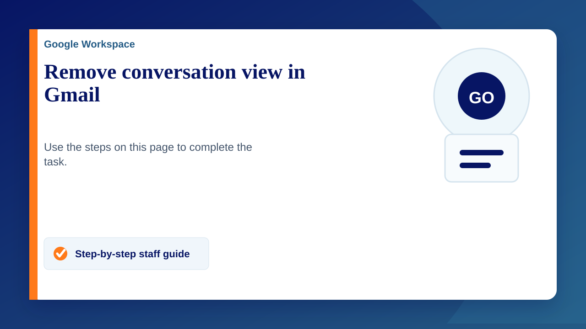
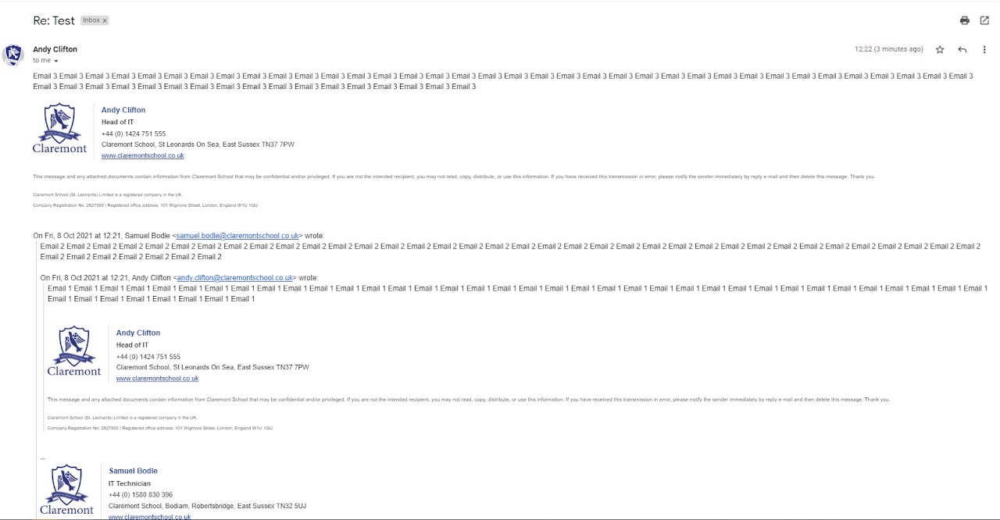
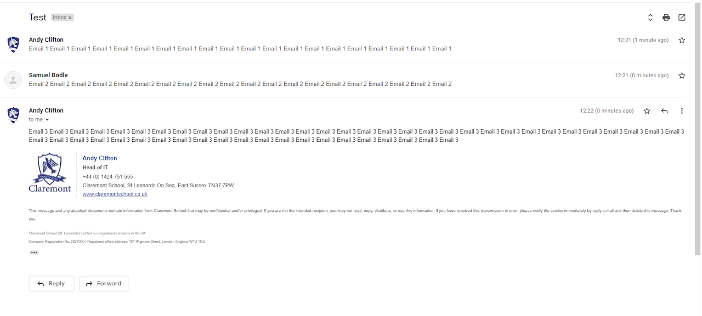

Gmail automatically groups together multiple emails in the same thread into one line in the inbox. This makes it easy to follow the context of the conversation since it’s all in one place. However, if you don’t want the conversation view on, you can simply disable it. (Personal opinion: it's a terrible feature and should 't be on by default. It's a way to easily miss messages and make it difficult to find certain messages)
To turn off Conversation view in Gmail
- From your Gmail account, click on the gear icon and then select ‘Settings’.
- Under the ‘General’ tab (1st tab) scroll down to the ‘Conversation View’ option.
- Click on the radio button ‘Conversation view off’ to disable conversation view.
- Scroll down to the bottom of the page and click ‘Save changes’.
Below is a comparison between the two views
Conversation View - Off
Conversation View - On

